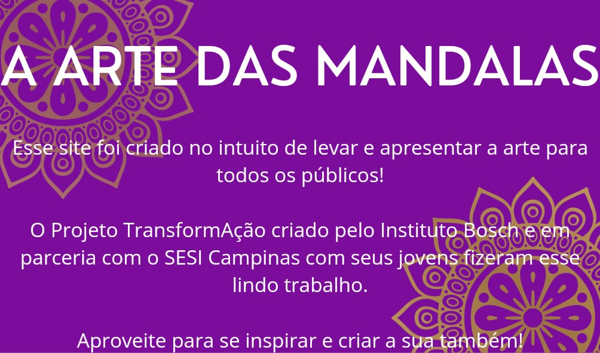
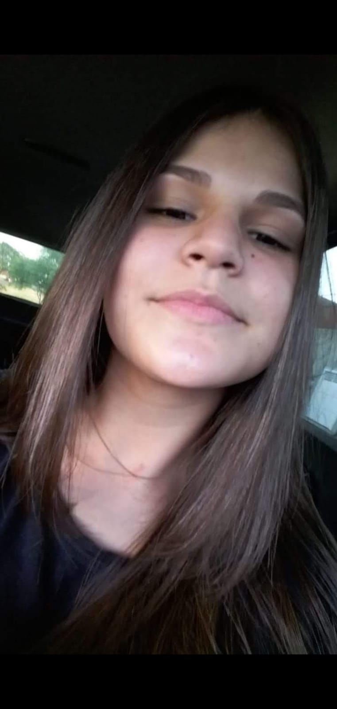
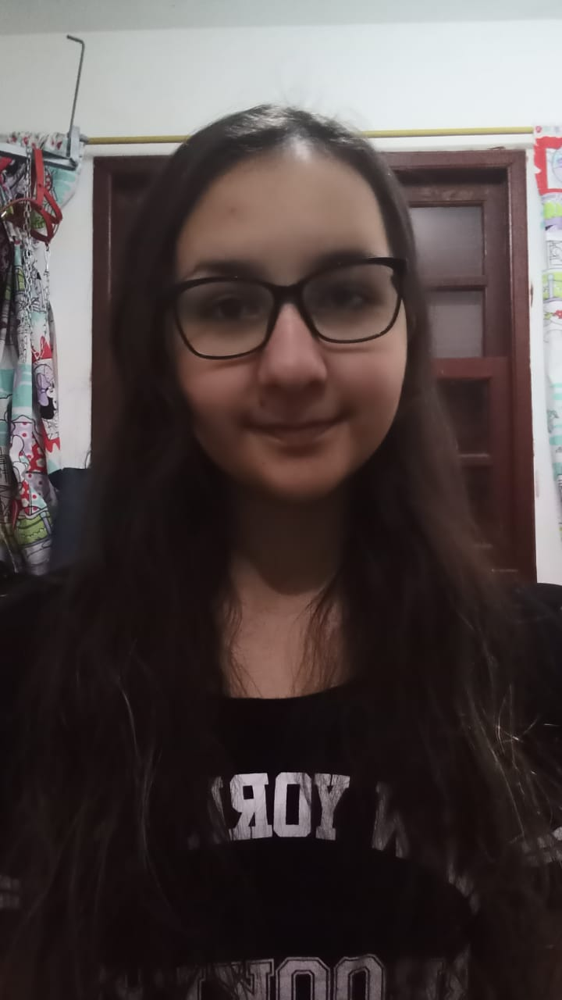

Veja o nosso vídeo para ter uma experiência mais dinâmica
Ana Gabi

- Mandala

- Na mandala só usei a criatividade, não pensei em nada em específico.
Anny
- Mandala
- Me chamo Anny Caroliny tenho 16 anos. Eu gostei bastante de fazer minha mandala, ela representa dois lados da minha vida.
Bianca

- Mandala
- Oiê, sou a Bianca de Jesus pires e tenho 16 anos. Me senti muito aliviada ao desenhar a mandala, foi justamente no dia do meu aniversário e eu não estava muito bem naquele dia.
- Sobre a parte de dentro (o coração) representa eu, as coisas que eu gosto de fazer e que estão costuradas porque são coisas que tive que vestir em mim aos poucos.
- As veias coloridas representam minhas experiências de vida e note que algumas delas não começam diretamente do coração e sim de outras veias, essas significam projetos que eu acabei desviando a trajetória e depois voltei a fazer ou acabei por desistir (note tbm que algumas veias acabaram porque foram furadas, essa representam experiências que tive que parar porque não faziam bem a minha vida espiritual e mental. Existe uma veia verde que começa com uma cor mais escura diretamente do coração mas logo cessa sem precisar ser cortada, ela representa projetos que comecei com tudo mas logo cansei, veja que o sangue dela começa a pingar em uma veia que tem um tom mais claro de verde, representando que eu percebi que certos projetos precisam ser feitos devagar para serem concluídos bem.
- Como vc pode ver, o coração está com uma peça faltando, uma peça que rasgou parte do coração junto e por isso nunca poderá ser substituída por inteiro, representa a minha avó, que partiu e fez com que muitas coisas em minha vida perdessem o sentido, deixando também um vazio enorme.
Abaixo da peça tem um muro que está sendo feito de cima para baixo, mesmo que isso seja contra as leis da física kkkkk significa, basicamente, que estou construindo o meu eu começando pela minha mentalidade até chegar o lado de fora. Os ossos são o meu corpo que ainda será coberto pelo "muro da mentalidade".
- Do lado do muro temos uma mudinha, uma planta que acabou de nascer e está dentro do coração porque representa o que eu sou agora. uma coisa que talvez passaria despercebida é a arvore que está do lado de fora, essa é quem eu quero me tornar para dar frutos.
- E Por cima da mudinha, temos uma nota musical que está fora dos "gostos costurados" porque a música sempre esteve presente na minha vida.
- Finalmente, chegamos a coisa mais importante, do lado de fora, que é a coroa de espinhos de Cristo. Ela dá sentido a tudo o que está dentro e representa também que quero me tornar alguém mais focada em nele.
- Poema
- Aprendendo a lidar
- Não sei quando arranjei tanto problema
- Nem sei se tudo isso vale mesmo a pena
- Arriscar agora pra aprender
- Ou arriscar tudo e denovo me perder?
- Não é fácil ser menina e nem mulher
- A onde eu vou tenho que pensar
- É um lugar Qualquer
- Mas e se alguém me assediar?
- Tem sido difícil pensar, pensar e pensar
- Só pra não errar
- Mas isso me faz um ser humano
- Eu caio, aprendo e me levanto
- As vezes mais de uma vez
- Mais que duas ou três
- Talvez vala a pena tentar,
- Devo um conselho procurar?
- Ou por mim mesma pensar?
- mas E se... Denovo eu errar?
Carlos Eduardo

- Mandala

- Me chamo Carlos Eduardo Faustino Barbosa tenho 17 anos, minha mandala representa tempo e caminho ao fazer minha mandala me senti satisfeito e feliz.
- Poema
- Escrever é liberdade
- De pintar um quadro de dentro para fora
- O mundo visto pelos olhos do sentimento e emoção
- Tinta que espelha e escorre
- Livre e solto
- Regrado apenas pelo o que sente
- A cada palavra despejada para fora è um peso lançado fora
- Pois as palavras não ditas pesam dentro do meu ser
- E para não explodir
- Preciso pintar esse quadro sem pé nem cabeça
- Quase que surreal
- Mas claro que o que sinto é real
Emellyn

- Mandala
- Me chamo Emellyn Santos Caetano e tenho 17 anos, minha Mandala representa minhas forças e fraquezas ao fazer ela me senti livre.
Gabriela

- Mandala
- Olá, meu nome é Gabriela Yaeko Onaka, tenho 15 anos. Me senti muito bem e feliz ao realizar a mandala. Confesso que demorei para escolher o que realizaria, pesquisei ideias, e não achei nada até que uma mandala, chamou demais minha atenção. Então naquele momento percebi que seria aquela, a escolhida. O que me ajudou também foi a música que o Alex colocou naquele momento, foi totalmente relaxante e ajudou na escolha. Comecei primeiro fazendo um rascunho, fiquei bastante tempo ali, desenhado. Após acabar, passei para madeira, achei incrível desenhar a mandala, fiquei feliz demais ao realizá-la. No centro pintei cores diferentes pois gosto demais delas para mim, ela está presente na minha vida e tudo que eu faço, ela me faz ficar bem. Depois desse dia, não parei de pesquisar outras mandalas para eu desenhar. Gostei demais em saber da história da mandala fiquei principalmente desenhá-la, significou muito pra mim
Heloisa
- Mandala
- Me chamo Heloisa Carvalho Trabuco, tenho 15 anos e a minha Mandala representa os dois lados da minha vida. fazer ela me deixou confusa, porém conseguir representar os lados que me pertence.
Isabelly
- Mandala
- Sou Isabelly Souza Lui, tenho 17 anos e a minha experiência em fazer a mandala foi incrível! Pois coloquei todo meu sentimento em forma de arte.
Julia
- Mandala
- Poema
- É uma mistura de sentimentos
- Sentimentos que vão e vem como as ondas do mar.
- Sorrisos de um lado, e sorrisos do outro
- Idéias são trocadas sempre recheadas de respeito e compreensão
Kamilla Victória

- Mandala

- Me chamo Kamilla Victória De Carvalho Pereria, tenho 16 anos. A minha mandala não representa nada em especial, foi difícil para mim fazer, pois não sou muito criativa, mas gostei do resultado.
- Poema
- Aprender
- Aprender é algo sem fim
- Eu aprendi
- Aprendi a confiar
- Aprendi a cuidar
- Aprendi que você não precisa sofrer para mudar,
- Não precisa estar sozinho pra evoluir
- Eu aprendi
- Aprendi que precisa fazer valer a pena
- Aprendi a agradecer
- É difícil crescer
- Mas sei que ainda tenho muito à aprender.
Lívea
- Mandala
- Quando comecei a fazer foi um breve pensamento de planejamento, daí em seguida eu meio que comecei a me divertir com os elementos e isso me levou a não fazer pensando em algo ou fazendo específico em algum sentimento, eu só estava me divertindo no processo.
- Poema
- Vem aí uma luz,
- Marcando sua presença
- Sendo quem é.
- Cresce sendo livre
- Espalhando-se ao seu florescer
- Quem és Peregrina?
- Cordas da vida secas
- Extinto revolucionário
- Sendo quem é.
- Dúvidas nascem
- Respostas encontradas nas folhas
- Uma vez sendo seu público
- Quem és Peregrina?
- Florescer do caminhar
- Sempre a viver na luz.
Lohane

- Mandala
- Meu nome é Lohane de Oliveira Cerqueira,tenho 17 anos,foi a primeira vez que fiz uma mandala,uma experiência nova e diferente,coloquei elementos que me representa e são importantes para mim.
- Poema
- Assim sou eu
- Feliz, triste.
- Amigável.
- Carismática.
- Divertida às vezes.
- Confusa.
- Indecisa.
- Falante.
- Curiosa.
- Ama escutar história da vida das pessoas.
- Cuida de si e dos outros.
- Quero o bem de todos.
- Ama bichinhos de estimação.
- Gosta de plantar.
- Dançar e cantar mesmo sem saber.
- Meu lado criança sempre está exposto.
- Com muito orgulho no rosto.
- Gosta de assistir de tudo um pouco.
- Gosta muito de comer.
- Arrisca na cozinha, mesmo sem saber
Lucas
- Mandala

- Meu nome é : Lucas da Silva Reitor, tenho 16 anos, minha mandala representa as partes da minha vida, ao fazer ela me senti muito confortado e bem feliz fazendo a mandala
- Poema
- Fazer poesia, para mim, é ser capaz de construir quando tudo está desfeito por dentro. É um jeito de entender o mundo através da brisa moda que arrepia a nossa essência. É o assovio da alma mesmo guardando lá fora um conto o mais preenchendo silêncio. Fazer poesia é como amar através das palavras
Ludwick
- Mandala
- Aprendizado
- É tão bom olhar pra trás e ver o quanto aprendi, amadureci.
- Cada ensinamento, aprendizado que conquistei e irei adquirir fará com que eu chegue lá e possa dizer " eu consegui"
- Me lembro do dia que corri em direção aquela mulher, baixinha e sorridente, para pedir que me deixasse participar do projeto, não dependia apenas dela,mas tinha esperança de que conseguiria
- É insano pensar em tudo o que pensei para chegar até aqui, foram muitos obstáculos que fizeram com que eu pensasse em desistir, mas alguma coisa dentro de mim, falava que eu deveria persistir
- Permaneci forte, e hoje vejo o tanto que está valendo apenas cada esforço que eu fiz para poder aprender, para poder adquirir ensinamentos valiosos que me seguirão para sempre. O que me resta refletir todo aprendizado, ter convicção de que eu posso, e um dia finalmente dizer "MUITO OBRIGADO"
Ludwick lima
Jennyfer

Luisa Vieira

- Mandala

- Me chamo Luisa Garcia Vieira, tenho 15 anos e na minha mandala tem um olho, esse olho observa, sente, chora de tristeza e de felicidade, o olhar que ele tem é brilhante, mas nem sempre ele está brilhante…
- Ao fazer a mandala me senti em uma terapia relaxante e a cada linha que eu fazia eu pensava no que ia significar aquele desenho pra mim.
Wellisson
- Mandala
- Poema
- Sonhei que eu tava em uma vida dahora
- Quando acordei fui ver se o sol tava lá fora
- Da onde vim fui ensinado a ser sonhador
- Com fé em Deus já sei que vai chegar a hora.
- E quantas vezes eu e meu mundo
- Duvidei de mim
- Quanto vale isso tudo
- Se tudo isso tem um fim
- Eu perguntava o pai por que tem
- Que ser assim
- A vida pode ser injusta para algumas
- Mas tudo tem um motivo sim.
Ane
- Mandala
Bryan
- Mandala
- Eu sou o Bryan tenho 15 anos, gosto muito de fazer artes de mídias sociais e edição de vídeos, também gosto de jogar futebol com meu pai e meu irmão.E eu fiz a mandala pensando no futuro.
Dheylien
- Mandala
- Eu fiz pensando em toda a minha trajetória até o dia em que a fiz, significa muito pra mim! Vejo que cresci, amadureci e aprendi muito.
Giovana
- Mandala
- Poema
- Nunca deixe de sonhar e lutar
- Basta apenas, caminhar
- Estude, trabalhe e pense
- Conheça e experimente
- Pense positivo, faça e convença
- Não pense em desistir, pois há uma evidência
- Nada estará perdido, pois é só um começo
- Somente você é capaz de suportar um peso
- Persista, crie, e faça a diferença
- Tenha amor, paciência e esperança
- Não mude você, seja você mesmo
- Mude suas emoções e pensamento
Leonardo
- Mandala
Maria Eduarda Camargo

- Mandala

- Me chamo Maria Eduarda Camargo e tenho 16 anos.
- Fazer a mandala para mim, foi um momento onde pude me desconectar da correria do dia a dia e colocar um pouco mais de leveza e calmaria nas coisas.
Luisa
- Mandala

- Olá, meu nome é Luiza Serena e tenho 15 anos de idade!
- Minha esperiência fazendo a mandala foi incrível e única. Quando fui fazer a mandala, pensei muito no que eu poderia expressar no MDF (círculo de madeira). Então resolvi desenhar sobre algo que faz parte de mim, sobre paz, Deus e amor. São assuntos que eu amo falar sobre.
- Então vamos lá, o coração no centro, quer dizer amor, independente de qualquer coisa, que nunca falte amor. Os circulos pretos, estão em ordem crecente, significando crescimento. As bolinhas verdes, significam árvores, passando a pureza das árvores e da natureza. As flores significam que devo florecer sempre e mesmo que eu fique triste que eu possa florecer. As nuvens estão relacionadas a Deus ao céu e a paz. Que são muito importantes para mim e são essenciais para minha vivência. E por fim, as Taraxacum Dens-Leonis, que são as florzinhas cinzas, que significam paz e calmaria!
- Amei muito fazer a mandala e ter tido a oportunidade de desenhar. Obrigada a todos os envolvidos!
Veja a política de privacidade Política